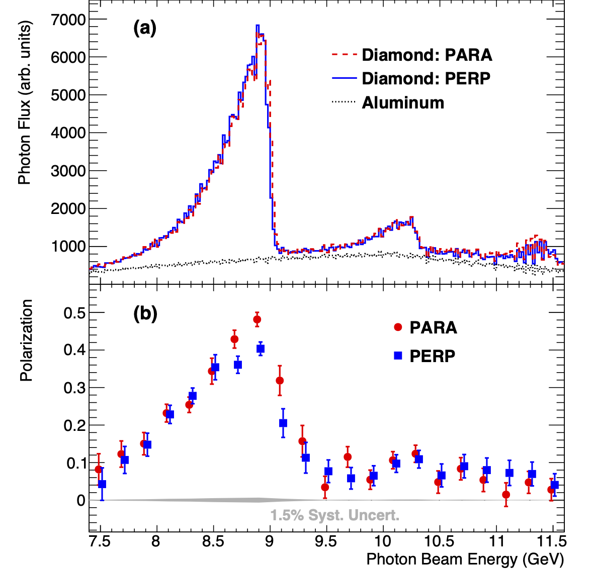
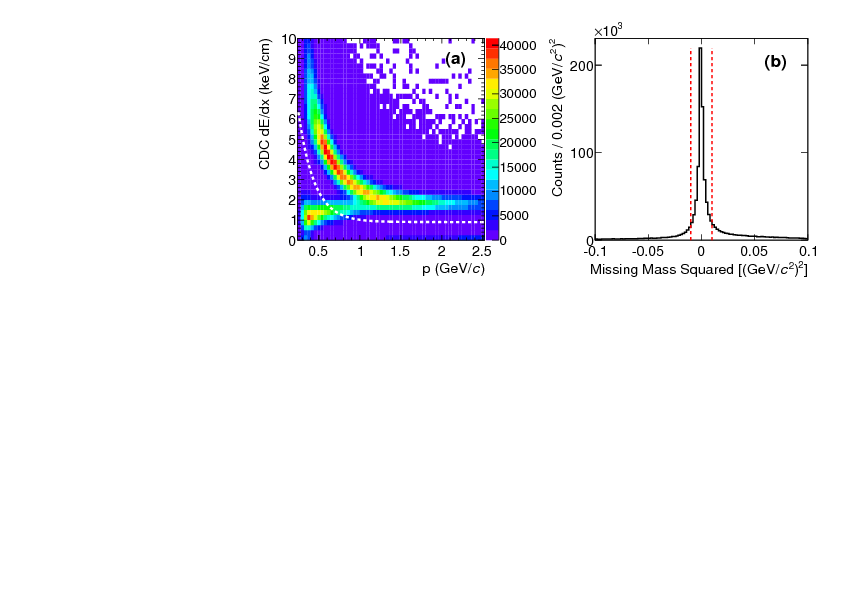
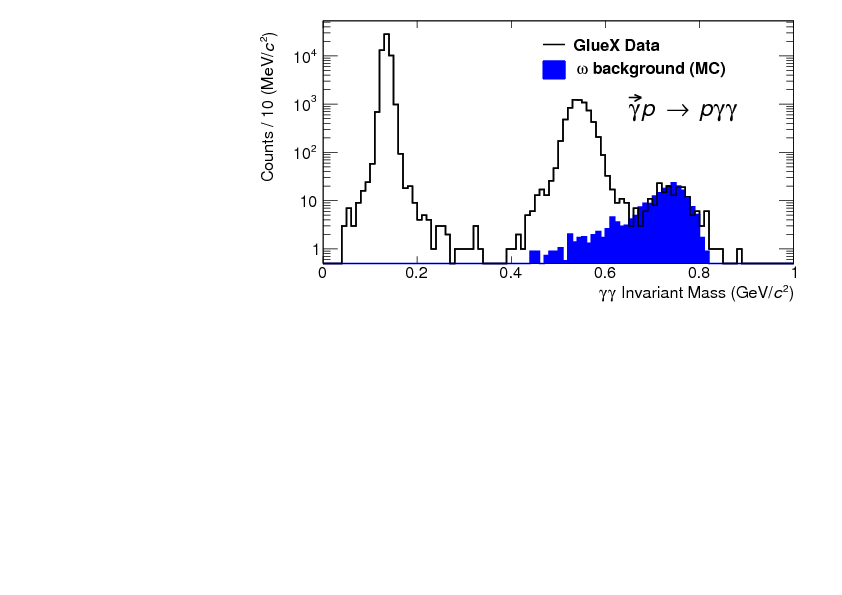
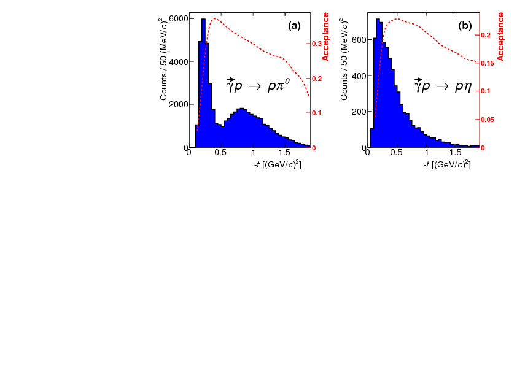
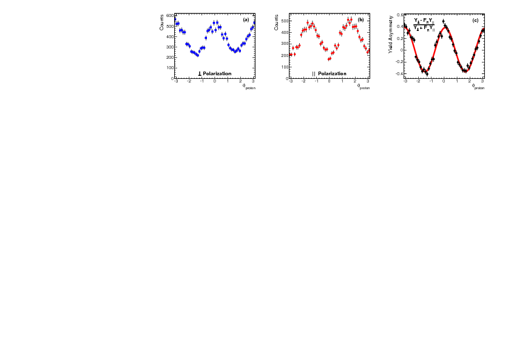
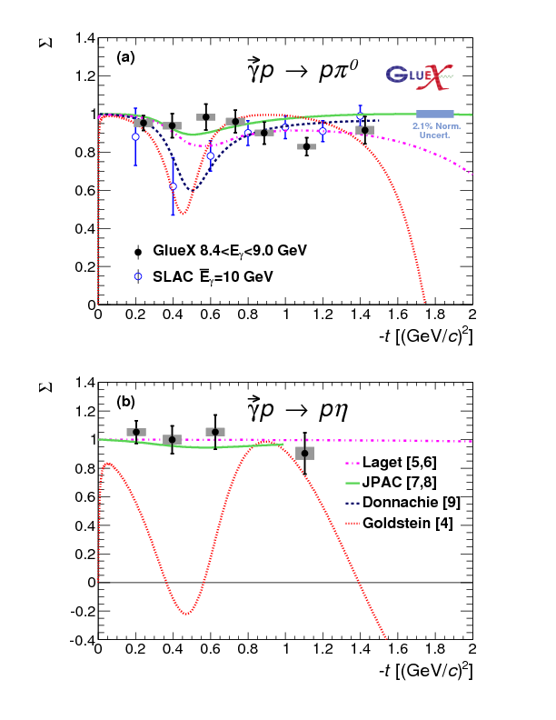

Measurement of the beam asymmetry $\Sigma$ for $\pi^0$ and $\eta$ photoproduction on the proton at $E_\gamma=9$ GeV
Abstract:
We report measurements of the photon beam asymmetry $\Sigma$ for the reactions $\vec{\gamma}p\to p\pi^0$ and $\vec{\gamma}p\to p\eta $ from the GlueX experiment using a 9 GeV linearly-polarized, tagged photon beam incident on a liquid hydrogen target in Jefferson Lab's Hall D. The asymmetries, measured as a function of the proton momentum transfer, possess greater precision than previous $\pi^0$ measurements and are the first $\eta$ measurements in this energy regime. The results are compared with theoretical predictions based on $t$-channel, quasi-particle exchange and constrain the axial-vector component of the neutral meson production mechanism in these models.Journal: Phys. Rev. C95, 042201 (2017)
arXiv: arXiv:1701.08123
HEPdata: link
|

PRC 95, 042201, (2017): downloads png pdf |
Figure 1:
(a) Photon beam intensity versus energy as measured by the pair spectrometer (not corrected for instrumental acceptance). (b) Photon beam polarization as a function of beam energy, as measured by the triplet polarimeter, with data points offset horizontally by $\pm$0.015 GeV for clarity. |
|

PRC 95, 042201, (2017): downloads png pdf |
Figure 2:
(a) Energy loss $dE/dx$ versus postively charged track momentum and (b) the spectrum of missing mass squared for the reaction $\vec{\gamma} p \to p\gamma\gamma$. |
|

PRC 95, 042201, (2017): downloads png pdf |
Figure 3:
$\gamma\gamma$ invariant mass distribution with clear peaks at the $\pi^0$ and $\eta$ masses, superimposed with background estimated from $\vec{\gamma} p \to p\omega$, $\omega \to \pi^0\gamma$ simulation. |
|

PRC 95, 042201, (2017): downloads png pdf |
Figure 4:
Candidate event yield as a function of the proton momentum transfer $-t$ for (a) $\vec{\gamma} p \to p\pi^0$ and (b) $\vec{\gamma} p \to p\eta$, without corrections for instrumental acceptance. The acceptance functions (red dashed), determined from MC simulation, are shown for comparison. |
|

PRC 95, 042201, (2017): downloads png pdf |
Figure 5:
$\vec{\gamma}p\to p\pi^0$ yield (statistical errors only) versus $\phi_p$ integrated over $-t$ for (a) PERP and (b) PARA. (c) The yield asymmetry, fit with Eq. (4) to extract $\Sigma$. |
|

PRC 95, 042201, (2017): downloads png pdf |
Figure 6:
Beam asymmetry $\Sigma$ for (a) $\vec{\gamma}p\to p\pi^0$ and (b) $\vec{\gamma}p\to p\eta$ (black filled circles). Uncorrelated systematic errors are indicated by gray bars and combined statistical and systematic uncertainties are given by the black error bars. The previous SLAC results [19] at $\overline{E}_\gamma=$10 GeV (blue open circles) are also shown along with various Regge theory calculations. |
{kind=link}
{kind=link}
{kind=link}
{kind=link}
{kind=link}
{kind=link}